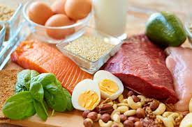
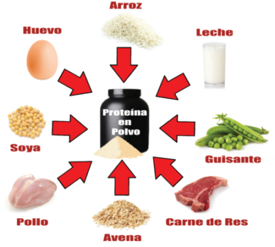

PROTEINAS EN LA DIETA
Las proteínas se encuentran en cada célula del cuerpo. Nuestro organismo necesita proteínas de los alimentos que ingerimos para fortalecer y mantener los huesos, los músculos y la piel. Obtenemos proteínas de la carne, los productos lácteos, las nueces y algunos granos o guisantes. Las proteínas de la carne y otros productos animales son proteínas completas, es decir, suministran todos los aminoácidos que el cuerpo no puede producir por sí mismo. La mayoría de las proteínas de las plantas son incompletas. Usted debe combinar distintos tipos de proteínas de plantas cada día para obtener todos los aminoácidos que el cuerpo requiere.

